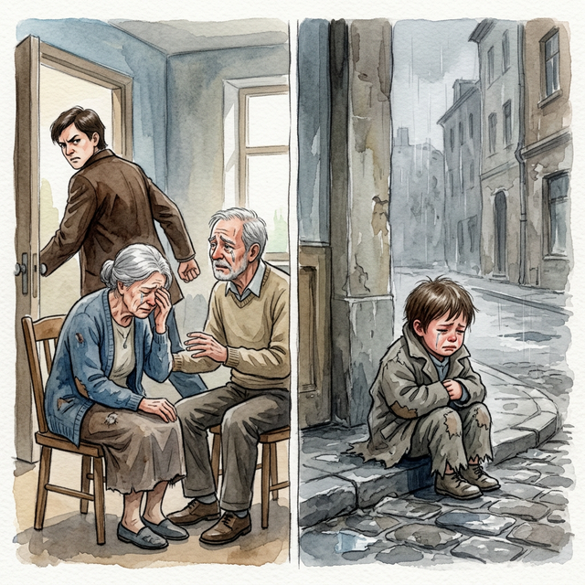
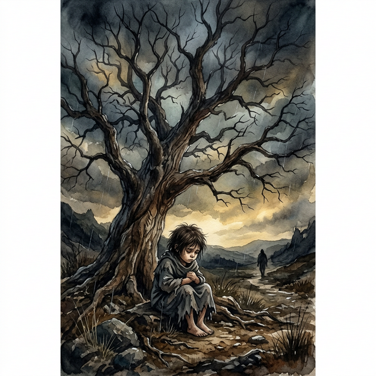
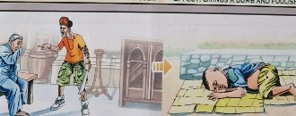

El Cordón CortadoThe Cut CordIl cordone tagliato被割断的绳子الحبل المقطوعРазрезанный шнурDie durchtrennte SchnurLe cordon coupéカットされたコードO cordão cortadoSợi dây bị cắt
Quien olvida sus raíces marcha perdido en un mundo sin luz. Whoever forgets his roots lost marches in a world without light. Bất cứ ai cội nguồn của mình sẽ bước đi lạc lối trong một thế giới không có ánh sáng. Wer seine Wurzeln vergisst, geht verloren in einer Welt ohne Licht. Кто забывает свои корни, идет потерянным в мире без света. Celui qui oublie ses racines marche perdu dans un monde sans lumière. Chi dimentica le proprie radici cammina perduto in un mondo senza luce. Quem esquece suas raízes caminha perdido num mundo sem luz. ルーツを忘れた者は、光のない世界で迷子になって歩みます。 忘记自己根源的人在没有光的世界中迷失地游行。 من ينسى جذوره يمشي ضائعا في عالم بلا نور.
Las raíces de nuestra encarnación son, por derecho divino, aquellos que nos han prestado su sangre. Quien voltea el rostro, reniega, o maldice a los padres que lo criaron, está talando el propio soporte sutil de su existencia...
La ingratitud filial corta indiscriminadamente aquel cordón dorado que nos ancla a la compasión cósmica. Es la afrenta capital contra aquellos que nos arroparon cuando no éramos más que llanto e indefensión.
Por lo tanto, la justicia universal es drástica con quien desmiembra la familia natural: arroja invariablemente al infractor al próximo nacimiento sumido en la orfandad absoluta, el abandono y el llanto silencioso de no tener jamás unos brazos que lo contengan.
The roots of our incarnation are, by divine right, those who have lent us their blood. Whoever turns away, denies, or curses the parents who raised him, is cutting down the very subtle support of his existence...
Filial ingratitude indiscriminately cuts that golden cord that anchors us to cosmic compassion. It is the capital affront against those who sheltered us when we were nothing more than crying and defenseless.
Therefore, universal justice is drastic with those who dismember the natural family: it invariably throws the offender into the next birth immersed in absolute orphanhood, abandonment and the silent crying of never having arms to contain him.
Le radici della nostra incarnazione sono, per diritto divino, coloro che ci hanno prestato il loro sangue. Chi si allontana, rinnega o maledice i genitori che lo hanno cresciuto, taglia il sottilissimo sostegno della sua esistenza...
L’ingratitudine filiale taglia indiscriminatamente quella corda dorata che ci ancora alla compassione cosmica. È l’affronto capitale contro chi ci ha protetto quando non eravamo altro che piangenti e indifesi.
Pertanto, la giustizia universale è drastica con coloro che smembrano la famiglia naturale: getta invariabilmente il delinquente nella nascita successiva immerso nell'orfanotrofio assoluto, nell'abbandono e nel pianto silenzioso di non avere mai armi per contenerlo.
根据神圣权利，我们化身的根源是那些借给我们鲜血的人。谁背弃、否认或诅咒养育他的父母，谁就等于切断了他存在的微妙支撑……
孝顺的忘恩负义不分青红皂白地割断了我们与宇宙慈悲相连的金线。这是对那些在我们哭泣无助时庇护我们的人的最大侮辱。
因此，普遍正义对于那些肢解自然家庭的人来说是严厉的：它总是将罪犯扔到下一个出生，沉浸在绝对的孤儿、遗弃和永远没有武器来遏制他的无声哭泣中。
جذور تجسدنا هي، بحق إلهي، أولئك الذين أعارونا دمائهم. من يبتعد أو ينكر أو يلعن والديه الذين ربوه، فإنه يقطع الدعم الدقيق لوجوده...
إن جحود الابناء يقطع بشكل عشوائي هذا الحبل الذهبي الذي يربطنا بالرحمة الكونية. إنها الإهانة الكبرى ضد أولئك الذين آوونا عندما لم نكن سوى باكيين وعزل.
لذلك، فإن العدالة الشاملة تكون صارمة مع أولئك الذين يقطعون أوصال الأسرة الطبيعية: فهي تلقي بالمذنب دائمًا إلى الولادة التالية، غارقًا في اليتم المطلق، والهجر، والبكاء الصامت لعدم وجود أسلحة لاحتواءه أبدًا.
Корнями нашего воплощения по божественному праву являются те, кто одолжил нам свою кровь. Кто отворачивается, отрицает или проклинает воспитавших его родителей, тот отсекает тончайшую опору своего существования...
Сыновняя неблагодарность без разбора перерезает ту золотую нить, которая привязывает нас к космическому состраданию. Это величайшее оскорбление тех, кто приютил нас, когда мы были всего лишь плачущими и беззащитными.
Поэтому всеобщее правосудие жестоко по отношению к тем, кто расчленяет естественную семью: оно неизменно бросает преступника в следующее рождение, погруженного в абсолютное сиротство, заброшенность и безмолвный плач о том, что у него никогда не будет оружия, чтобы сдержать его.
Die Wurzeln unserer Inkarnation sind durch göttliches Recht diejenigen, die uns ihr Blut geliehen haben. Wer sich von den Eltern, die ihn großgezogen haben, abwendet, sie verleugnet oder verflucht, schwächt die sehr subtile Stütze seiner Existenz ...
Kindliche Undankbarkeit zerschneidet wahllos die goldene Schnur, die uns im kosmischen Mitgefühl verankert. Es ist der größte Affront gegen diejenigen, die uns Schutz geboten haben, als wir nur noch weinten und wehrlos waren.
Daher ist die universelle Gerechtigkeit drastisch gegenüber denen, die die natürliche Familie zerstückeln: Sie wirft den Täter unweigerlich in die nächste Geburt, eingetaucht in absolute Waisenschaft, Verlassenheit und den stillen Schrei, nie Arme zu haben, die ihn festhalten könnten.
Les racines de notre incarnation sont, de droit divin, celles qui nous ont prêté leur sang. Celui qui se détourne, nie ou maudit les parents qui l'ont élevé, coupe le support très subtil de son existence...
L’ingratitude filiale coupe sans discernement ce cordon d’or qui nous ancre à la compassion cosmique. C’est l’affront capital contre ceux qui nous ont hébergés alors que nous n’étions que pleurs et sans défense.
C’est pourquoi la justice universelle est drastique envers ceux qui démembrent la famille naturelle : elle jette invariablement le délinquant dans la prochaine naissance, plongé dans l’orphelinat absolu, l’abandon et les cris silencieux de ne jamais avoir de bras pour le contenir.
私たちの受肉の根源は、神の権利により、私たちに血を貸してくれた人々です。彼を育ててくれた両親に背を向けたり、否定したり、呪ったりする人は、彼の存在の非常に微妙な支えを切り捨てることになります...
親孝行の忘恩は、私たちを宇宙の慈悲に結び付ける黄金の紐を無差別に切断します。それは、私たちが無防備に泣いているだけだったときに私たちを保護してくれた人たちに対する首都の侮辱です。
したがって、普遍的な正義は、自然な家族を解体する人々に対しては徹底的です。それは常に犯罪者を絶対的な孤児、放棄、そして彼を収容するための武器が決してないという静かな叫びの中に浸りながら次の誕生に投げ込みます。
As raízes da nossa encarnação são, por direito divino, aqueles que nos emprestaram o seu sangue. Quem se afasta, nega ou amaldiçoa os pais que o criaram, está cortando o suporte muito sutil de sua existência...
A ingratidão filial corta indiscriminadamente aquele cordão dourado que nos ancora à compaixão cósmica. É a afronta capital contra aqueles que nos abrigaram quando éramos apenas chorosos e indefesos.
Portanto, a justiça universal é drástica com quem desmembra a família natural: invariavelmente lança o infrator no próximo nascimento imerso na orfandade absoluta, no abandono e no choro silencioso de nunca mais ter braços para contê-lo.
Cội rễ của sự hóa thân của chúng ta, theo quyền năng thần thánh, chính là những người đã cho chúng ta dòng máu của họ. Kẻ nào ngoảnh mặt, chối bỏ, hoặc nguyền rủa cha mẹ đã nuôi nấng mình, kẻ đó đang tự chặt đi chỗ dựa tinh tế nhất cho sự tồn tại của chính mình...
Sự vô ơn đối với cha mẹ sẽ cắt bỏ một cách không phân biệt sợi dây vàng kết nối chúng ta với lòng trắc ẩn của vũ trụ. Đó là sự sỉ nhục lớn nhất đối với những người đã che chở chúng ta khi chúng ta không có gì khác ngoài tiếng khóc và sự yếu ớt.
Do đó, công lý phổ quát rất nghiêm khắc với kẻ nào chia cắt gia đình tự nhiên: nó luôn đẩy kẻ vi phạm vào kiếp sau ngập trong sự mồ côi tuyệt đối, bị bỏ rơi và tiếng khóc thầm lặng vì không bao giờ có một vòng tay nào ôm ấp.
El Karma trae el fin rápido de las bendiciones materiales. La riqueza se esfuma; el alma debe experimentar lo que significa estar en el lado vulnerable para valorar la justicia.
Karma brings a quick end to material blessings. Wealth vanishes; the soul must experience what it means to be on the vulnerable side to value justice.
Karma mang lại sự kết thúc nhanh chóng cho các phước lành vật chất. Sự giàu sang tan biến; linh hồn phải trải nghiệm cảm giác ở phía dễ bị tổn thương để biết trân trọng công lý.
Il karma pone fine rapidamente alle benedizioni materiali. La ricchezza svanisce; l'anima Devi sperimentare cosa significa essere dalla parte vulnerabile per dare valore alla giustizia.
业力会很快结束物质上的祝福。财富消失；灵魂 You must experience what it means to be on the vulnerable side to value justice.
الكارما تجلب نهاية سريعة للبركات المادية. الثروة تختفي؛ الروح يجب أن تختبر ما يعنيه أن تكون في الجانب الضعيف لتقدير العدالة.
Карма приводит к быстрому прекращению материальных благ. Богатство исчезает; душа Вы должны испытать, что значит быть уязвимым, чтобы ценить справедливость.
Karma beendet den materiellen Segen schnell. Reichtum verschwindet; die Seele Um Gerechtigkeit zu schätzen, müssen Sie erfahren, was es bedeutet, auf der verletzlichen Seite zu stehen.
Le karma met fin rapidement aux bénédictions matérielles. La richesse disparaît ; l'âme Vous devez expérimenter ce que signifie être du côté vulnérable pour valoriser la justice.
カルマは物質的な祝福をすぐに終わらせます。富は消えます。魂 正義を大切にするためには、弱い側に立つことが何を意味するのかを経験する必要があります。
Karma traz um fim rápido às bênçãos materiais. A riqueza desaparece; a alma You must experience what it means to be on the vulnerable side to value justice.
El Árbol sin Raíces
The Rootless Tree
L'albero senza radici
无根之树
الشجرة بلا جذور
Дерево без корней
Der wurzellose Baum
L'arbre sans racines
根のない木
A árvore sem raízes
Cây Không Rễ
Ataviado con ropas de seda y jactándose de haber 'forjado su propio destino', un joven adinerado cerró la pesada puerta a sus padres ancianos, riendo ante sus ruegos por cobijo, y arguyendo que ya no le eran útiles...
Lo que el joven soberbio ignoraba, es que el universo pesa las lágrimas de los padres sobre los hijos. Y al romper el vínculo por desdén, el telar cortó de tajo su continuidad protectora.
Cuando exhaló su último aliento y volvió a nacer, su primer respiro fue bajo la tormenta fría, abandonado cruelmente entre las piedras. Así, descubrió en la intemperie desgarradora, el valor infinito que encierra poder pronunciar la palabra 'madre'.
Dressed in silk robes and boasting of having 'forged his own destiny', a wealthy young man closed the heavy door on his elderly parents, laughing at their pleas for shelter, and arguing that they were no longer useful to him...
What the arrogant young man did not know is that the universe weighs the tears of the parents on the children. And by breaking the bond out of disdain, the loom cut short its protective continuity.
When he breathed his last and was born again, his first breath was under the cold storm, cruelly abandoned among the stones. Thus, she discovered in the heartbreaking outdoors, the infinite value of being able to pronounce the word 'mother'.
Vestito con abiti di seta e vantandosi di aver "forgiato il proprio destino", un giovane ricco chiuse la pesante porta in faccia ai suoi anziani genitori, ridendo delle loro richieste di rifugio e sostenendo che non gli erano più utili...
Ciò che il giovane arrogante non sapeva è che l'universo pesa sui figli le lacrime dei genitori. E rompendo il legame per disprezzo, il telaio ha troncato la sua continuità protettiva.
Quando esalò l'ultimo respiro e rinasceva, il suo primo respiro fu sotto la fredda tempesta, crudelmente abbandonato tra le pietre. Così, nella straziante vita all'aria aperta, ha scoperto il valore infinito di poter pronunciare la parola "madre".
一位身着丝绸长袍、自诩“铸造了自己的命运”的富有年轻人为年迈的父母关上了厚重的大门，嘲笑他们的庇护请求，并辩称他们对他不再有用……
这个傲慢的年轻人不知道的是，宇宙把父母的眼泪压在孩子身上。出于蔑视，织布机打破了这种联系，从而缩短了其保护性的连续性。
当他咽下最后一口气重生时，他的第一口呼吸是在寒冷的风暴下，被残酷地遗弃在石头之中。于是，她在令人心碎的户外，发现了能够念出“妈妈”这个词的无限价值。
يرتدي شاب ثري ملابس حريرية ويتفاخر بأنه "صنع مصيره"، وأغلق الباب الثقيل في وجه والديه المسنين، ضاحكًا من توسلاتهم للحصول على مأوى، وجادل بأنهم لم يعودوا مفيدين له...
وما لم يعلمه الشاب المغرور أن الكون يثقل دموع الآباء على الأبناء. وبكسر الرابط بدافع الازدراء، قطع النول استمراريته الوقائية.
وعندما لفظ أنفاسه الأخيرة وولد من جديد، كانت أنفاسه الأولى تحت العاصفة الباردة، متروكة بقسوة بين الحجارة. وهكذا، اكتشفت في الهواء الطلق المفجع، القيمة اللامتناهية للقدرة على نطق كلمة "الأم".
Одетый в шелковые одежды и хвастающийся тем, что «выковал свою судьбу», богатый молодой человек закрыл тяжелую дверь перед своими пожилыми родителями, смеясь над их мольбами о приюте и утверждая, что они ему больше не нужны...
Чего не знал высокомерный юноша, так это того, что Вселенная взвешивает слезы родителей на детях. И, разорвав связь из-за пренебрежения, ткацкий станок оборвал свою защитную непрерывность.
Когда он испустил последний вздох и родился заново, его первый вздох был под холодной бурей, жестоко заброшенный среди камней. Таким образом, на душераздирающей природе она обнаружила бесконечную ценность возможности произнести слово «мать».
In seidenen Roben gekleidet und prahlend, „sein eigenes Schicksal geschmiedet“ zu haben, schloss ein wohlhabender junger Mann die schwere Tür vor seinen alten Eltern, lachte über ihre Bitten um Schutz und argumentierte, dass sie ihm nicht mehr nützlich seien ...
Was der arrogante junge Mann nicht wusste, ist, dass das Universum die Tränen der Eltern auf den Kindern lastet. Und indem der Webstuhl das Band aus Verachtung brach, unterbrach er seine schützende Kontinuität.
Als er seinen letzten Atemzug tat und wiedergeboren wurde, war sein erster Atemzug unter dem kalten Sturm, grausam zurückgelassen zwischen den Steinen. So entdeckte sie in der herzzerreißenden Natur den unendlichen Wert, das Wort „Mutter“ aussprechen zu können.
Vêtu de robes de soie et se vantant d'avoir « forgé son propre destin », un jeune homme riche a fermé la lourde porte à ses parents âgés, se moquant de leurs demandes d'abri et arguant qu'ils ne lui étaient plus utiles...
Ce que le jeune homme arrogant ne savait pas, c'est que l'univers pèse les larmes des parents sur les enfants. Et en rompant le lien par dédain, le métier à tisser a coupé court à sa continuité protectrice.
Lorsqu'il rendit son dernier soupir et naquit de nouveau, son premier souffle fut sous la tempête froide, cruellement abandonné parmi les pierres. Ainsi, elle a découvert, dans un environnement extérieur déchirant, la valeur infinie de pouvoir prononcer le mot « mère ».
絹のローブを着て「自分の運命は自分で切り拓いた」と豪語する裕福な青年が、年老いた両親に重い扉を閉め、保護を求める両親の嘆願を笑いながら、彼らはもう自分にとって役に立たないと主張した...
傲慢な青年が知らなかったことは、宇宙は親の涙を子供たちに重くのしかかっているということだった。そして、軽蔑から絆を断ち切ることで、織機はその保護の継続性を断ち切りました。
彼が息を引き取り、再び生まれ変わったとき、彼の最初の息は冷たい嵐の下で、残酷にも石の間に置き去りにされました。こうして彼女は、悲痛な屋外で「お母さん」という言葉を発音できることの無限の価値を発見した。
Vestido com túnicas de seda e gabando-se de ter “forjado o seu próprio destino”, um jovem rico fechou a pesada porta aos seus pais idosos, rindo dos seus pedidos de abrigo e argumentando que já não lhe eram úteis...
O que o jovem arrogante não sabia é que o universo pesa sobre os filhos as lágrimas dos pais. E ao romper o vínculo por desdém, o tear interrompeu sua continuidade protetora.
Quando ele deu seu último suspiro e nasceu de novo, seu primeiro suspiro foi sob a tempestade fria, cruelmente abandonado entre as pedras. Assim, ela descobriu, no ar livre comovente, o valor infinito de poder pronunciar a palavra 'mãe'.
Khoác trên mình những bộ áo lụa và khoe khoang rằng mình đã 'tự tạo nên số phận', một chàng trai giàu có đã đóng sầm cánh cửa nặng nề trước mặt cha mẹ già yếu, cười nhạo những lời cầu xin nơi trú ẩn của họ, và lập luận rằng họ không còn ích gì cho anh ta nữa...
Điều mà chàng trai kiêu ngạo không biết, đó là vũ trụ cân đo những giọt nước mắt của cha mẹ lên đầu con cái. Và bằng cách cắt đứt mối liên kết vì sự khinh thường, khung cửi đã cắt đứt sự bảo hộ liên tục của nó.
Khi anh trút hơi thở cuối cùng và được sinh ra một lần nữa, hơi thở đầu tiên của anh là dưới cơn bão lạnh giá, bị bỏ rơi tàn nhẫn giữa những tảng đá. Và từ đó, anh đã khám phá ra giữa sự khắc nghiệt đau đớn của thiên nhiên, giá trị vô hạn của việc có thể thốt ra từ 'mẹ'.

La Inspiración Original
The Original Inspiration
L'Ispirazione Originale
最初的灵感
الإلهام الأصلي
Оригинальное вдохновение
Die Ursprüngliche Inspiration
L'Inspiration Originale
元のインスピレーション
A Inspiração Original
Nguồn Cảm Hứng Nguyên Bản
La historia que hemos relatado en este capítulo está inspirada por el pasaje de la escena original de los murales «Tranh Nhân Quả» (Ilustraciones del Karma) del Templo Linh Ung en Da Nang, capturado en la imagen.
La storia che abbiamo raccontato in questo capitolo è ispirata al passaggio della scena originale dei murali “Tranh Nhân Quả” (Illustrazioni del Karma) del Tempio Linh Ung a Da Nang, catturati nell'immagine.
我们在本章中讲述的故事的灵感来自图像中捕获的岘港灵应寺“Tranh Nhân Quả”（业力插图）壁画的原始场景。
القصة التي رويناها في هذا الفصل مستوحاة من مقطع من المشهد الأصلي لجداريات "ترانه نهان كو" (الرسوم التوضيحية للكارما) لمعبد لينه أونغ في دا نانغ، الملتقطة في الصورة.
История, которую мы рассказали в этой главе, вдохновлена отрывком из оригинальной сцены фрески «Тран Нхан Ку» («Иллюстрации кармы») храма Линь Унг в Дананге, запечатленной на изображении.
Die Geschichte, die wir in diesem Kapitel erzählt haben, ist inspiriert von der Passage aus der Originalszene der Wandgemälde „Tranh Nhân Quả“ (Illustrationen von Karma) des Linh Ung-Tempels in Da Nang, die im Bild festgehalten ist.
L'histoire que nous avons racontée dans ce chapitre est inspirée du passage de la scène originale des peintures murales « Tranh Nhân Quả » (Illustrations du Karma) du temple Linh Ung à Da Nang, capturées dans l'image.
この章で私たちが語った物語は、ダナンのリンウン寺院の壁画「Tranh Nhân Quả」（カルマの図）の元のシーンの一節からインスピレーションを得て、画像に収められています。
A história que contamos neste capítulo é inspirada na passagem da cena original dos murais “Tranh Nhân Quả” (Ilustrações do Karma) do Templo Linh Ung em Da Nang, capturada na imagem.
Câu chuyện mà chúng tôi đã kể trong chương này được lấy cảm hứng từ đoạn trích từ bối cảnh nguyên bản của bức bích họa «Tranh Nhân Quả» (Minh họa về Nghiệp) tại Chùa Linh Ứng ở Đà Nẵng, được ghi lại trong hình ảnh.
The story we have related in this chapter is inspired by the passage from the original scene of the "Tranh Nhân Quả" (Karma Illustrations) murals at the Linh Ung Temple in Da Nang, captured in the image.

Como se puede apreciar en el pasaje extraído del mural, la causa y su efecto kármico están descritos originalmente en vietnamita y con una breve traducción al inglés. A continuación, te ofrecemos su traducción detallada en los distintos idiomas:
As can be seen in the passage extracted from the mural, the cause and its karmic effect are originally described in Vietnamese with a brief English translation. Below, we offer the detailed translation in different languages:
Come si può vedere nel passaggio estratto dal murale, la causa e il suo effetto karmico sono originariamente descritti in vietnamita con una breve traduzione in inglese. Di seguito offriamo la traduzione dettagliata in diverse lingue:
As can be seen in the passage taken from the mural, the cause and its karmic effect are originally described in Vietnamese and with a brief translation into English.下面，我们为您提供不同语言的详细翻译：
وكما يتبين من المقطع المأخوذ من اللوحة الجدارية، فإن السبب وتأثيره الكارمي موصوفان في الأصل باللغة الفيتنامية مع ترجمة مختصرة إلى الإنجليزية. ونقدم لكم أدناه ترجمتها التفصيلية باللغات المختلفة:
Как видно из отрывка, взятого из фрески, причина и ее кармическое следствие изначально описаны на вьетнамском языке и с кратким переводом на английский язык. Ниже мы предлагаем вам его подробный перевод на разные языки:
Wie aus der Passage aus dem Wandgemälde hervorgeht, werden die Ursache und ihre karmische Wirkung ursprünglich auf Vietnamesisch und mit einer kurzen Übersetzung ins Englische beschrieben. Nachfolgend bieten wir Ihnen die ausführliche Übersetzung in die verschiedenen Sprachen an:
Comme on peut le voir dans le passage tiré de la peinture murale, la cause et son effet karmique sont initialement décrits en vietnamien et avec une brève traduction en anglais. Ci-dessous, nous vous proposons sa traduction détaillée dans les différentes langues :
壁画の一節からわかるように、原因とそのカルマ的影響はもともとベトナム語で説明されており、英語への簡単な翻訳が付けられています。以下に、さまざまな言語での詳細な翻訳を提供します。
Como pode ser visto no trecho retirado do mural, a causa e seu efeito cármico são originalmente descritos em vietnamita e com uma breve tradução para o inglês. Abaixo, oferecemos sua tradução detalhada nos diferentes idiomas:
Như có thể thấy trong đoạn trích từ bức bích họa, nguyên nhân và quả báo của nó ban đầu được mô tả bằng tiếng Việt và có bản dịch tiếng Anh ngắn gọn. Dưới đây, chúng tôi cung cấp bản dịch chi tiết của nó sang các ngôn ngữ khác nhau:
🇻🇳 Tiếng Việt:
Nhân: Bất hiếu với cha mẹ.
Quả: Mồ côi sớm.
🇬🇧 English Translation:
Cause: Lacking duties to parents.
Effect: Brings an orphan in the next life.
Traducción Recreada:
Causa: Faltar el respeto y no cumplir los deberes con los padres.
Efecto: En la próxima vida se renace como huérfano prematuro.
Recreated Translation:
Cause: Disrespect and failure to fulfill duties towards parents.
Effect: In the next life one is reborn as a premature orphan.
Traduzione ricreata:
Causa: mancanza di rispetto e mancato adempimento dei doveri verso i genitori.
Effetto: nella vita successiva si rinasce come orfano prematuro.
重译：
因：不尊重、不尽对父母的义务。
果：来世投生为早产孤儿。
الترجمة المعاد إنشاؤها:
السبب: عدم الاحترام والفشل في الوفاء بالواجبات تجاه الوالدين.
التأثير: في الحياة التالية، يولد الشخص من جديد باعتباره يتيمًا سابق لأوانه.
Воссозданный перевод:
Причина: Неуважение и невыполнение обязанностей по отношению к родителям.
Следствие: В следующей жизни человек перерождается недоношенным сиротой.
Nachgebildete Übersetzung:
Ursache: Respektlosigkeit und Nichterfüllung von Pflichten gegenüber den Eltern.
Auswirkung: Im nächsten Leben wird man als Frühwaise wiedergeboren.
Traduction recréée :
Cause : Manque de respect et manquement à ses devoirs envers les parents.
Effet : Dans la prochaine vie, on renaît comme un orphelin prématuré.
再作成された翻訳:
原因: 親に対する無礼と義務の不履行。
結果: 来世では未熟児孤児として生まれ変わる。
Tradução recriada:
Causa: Desrespeito e falha no cumprimento dos deveres para com os pais.
Efeito: Na próxima vida a pessoa renasce como um órfão prematuro.
Análisis: Quienes nos han prestado su sangre para encarnar en este pasaje existencial son el sagrado cordón ineludible que nos vincula a la raíz cósmica. La ingratitud filiar o el abandono frío a los que forjaron nuestra existencia rompe drásticamente esa protección vital natural. Ese desdén arroja invariablemente al individuo responsable hacia la brutalidad de la indefensión máxima y la orfandad en frío abandono para su próxima rueda experiencial.
Analysis: Those who have lent us their blood to incarnate in this existential passage are the sacred inescapable cord that links us to the cosmic root. Filial ingratitude or cold abandonment to those who forged our existence drastically breaks that natural vital protection. This disdain invariably throws the responsible individual towards the brutality of maximum helplessness and orphanhood in cold abandonment for his next experiential wheel.
Analisi: Coloro che ci hanno prestato il loro sangue per incarnarci in questo passaggio esistenziale sono la sacra corda ineludibile che ci collega alla radice cosmica. L'ingratitudine filiale o il freddo abbandono verso coloro che hanno forgiato la nostra esistenza spezzano drasticamente quella naturale protezione vitale. Questo disprezzo getta invariabilmente l'individuo responsabile verso la brutalità della massima impotenza e dell'orfanotrofio in un freddo abbandono per la sua successiva ruota esperienziale.
分析：那些借给我们鲜血并在这个存在通道中转世的人，是将我们与宇宙根源联系起来的神圣不可逃避的绳索。对那些塑造我们存在的人的孝顺忘恩负义或冷漠遗弃会极大地破坏这种自然的重要保护。这种蔑视总是让负责任的个人陷入最大程度的无助和孤儿的残酷境地，冷漠地抛弃他的下一个经验轮。
التحليل: أولئك الذين قدموا لنا دماءهم لنتجسد في هذا المقطع الوجودي هم الحبل المقدس الذي لا مفر منه والذي يربطنا بالجذر الكوني. إن الجحود الأبوي أو التخلي البارد لأولئك الذين صاغوا وجودنا يكسر بشكل جذري تلك الحماية الحيوية الطبيعية. هذا الازدراء يدفع دائمًا الفرد المسؤول نحو وحشية أقصى قدر من العجز واليتم في هجر بارد لعجلته التجريبية التالية.
Анализ: Те, кто одолжил нам свою кровь для воплощения в этом экзистенциальном отрывке, являются священной неразрывной нитью, связывающей нас с космическим корнем. Сыновняя неблагодарность или холодное отвержение тех, кто создал наше существование, резко разрушает эту естественную жизненно важную защиту. Это пренебрежение неизменно приводит ответственного человека к жестокости максимальной беспомощности и сиротства в холодном отказе от своего следующего колеса опыта.
Analyse: Diejenigen, die uns ihr Blut geliehen haben, um in dieser existenziellen Passage zu inkarnieren, sind das heilige, unentrinnbare Band, das uns mit der kosmischen Wurzel verbindet. Kindliche Undankbarkeit oder kalte Hingabe an diejenigen, die unsere Existenz geprägt haben, zerstören diesen natürlichen, lebenswichtigen Schutz drastisch. Diese Verachtung treibt das verantwortliche Individuum unweigerlich in die Brutalität maximaler Hilflosigkeit und Waisenschaft, in kalter Verlassenheit für sein nächstes Erlebnisrad.
Analyse : Ceux qui nous ont prêté leur sang pour nous incarner dans ce passage existentiel sont le cordon sacré incontournable qui nous relie à la racine cosmique. L'ingratitude filiale ou le froid abandon à ceux qui ont forgé notre existence brisent drastiquement cette protection vitale naturelle. Ce dédain jette invariablement l’individu responsable vers la brutalité de l’impuissance maximale et de l’orphelinat, dans un froid abandon pour sa prochaine roue expérientielle.
分析: この実存の通路に転生するために私たちに血を貸してくれた人々は、私たちを宇宙の根源に結び付ける、逃れられない神聖なコードです。私たちの存在を築き上げてくれた人々に対する親孝行な忘恩や冷酷な放棄は、その自然な生命の保護を劇的に破壊します。この軽蔑は常に、責任ある個人を、次の経験の輪に向けて冷酷に見捨てられ、極度の無力感と孤児という残酷な状況に投げ込むことになる。
Análise: Aqueles que nos emprestaram seu sangue para encarnar nesta passagem existencial são o cordão sagrado e inescapável que nos liga à raiz cósmica. A ingratidão filial ou o abandono frio a quem forjou a nossa existência rompe drasticamente essa proteção vital natural. Este desdém invariavelmente lança o indivíduo responsável em direção à brutalidade do desamparo máximo e da orfandade em frio abandono para sua próxima roda experiencial.
Phân tích: Những người đã cho chúng ta dòng máu để hóa thân vào kiếp sống này là sợi dây thiêng liêng không thể tránh khỏi kết nối chúng ta với cội rễ vũ trụ. Sự vô ơn đối với cha mẹ hoặc sự bỏ rơi lạnh lùng đối với những người đã tạo ra sự tồn tại của chúng ta sẽ phá vỡ quyết liệt sự bảo vệ quan trọng tự nhiên đó. Sự khinh thường đó sẽ luôn đẩy cá nhân chịu trách nhiệm vào sự tàn bạo của việc hoàn toàn không có chỗ dựa và sự mồ côi trong sự bỏ rơi lạnh lẽo cho vòng xoay trải nghiệm tiếp theo của họ.
Si quieres conocer más sobre el proyecto o colaborar, accede a nuestro Linktree.
If you want to know more about the project or collaborate, access our Linktree.
Se vuoi saperne di più sul progetto o collaborare, accedi al nostro Linktree.
如果您想了解有关该项目或合作的更多信息，请访问我们的 Linktree.
إذا كنت تريد معرفة المزيد عن المشروع أو التعاون، قم بالوصول إلى موقعنا Linktree.
Если вы хотите узнать больше о проекте или сотрудничать, посетите наш Linktree.
Wenn Sie mehr über das Projekt erfahren oder zusammenarbeiten möchten, greifen Sie auf unsere zu Linktree.
Si vous souhaitez en savoir plus sur le projet ou collaborer, accédez à notre Linktree.
プロジェクトについて詳しく知りたい場合、またはコラボレーションしたい場合は、こちらにアクセスしてください。 Linktree.
Se quiser saber mais sobre o projeto ou colaborar, acesse nosso Linktree.
Nếu bạn muốn biết thêm về dự án hoặc hợp tác, hãy truy cập Linktree của chúng tôi.